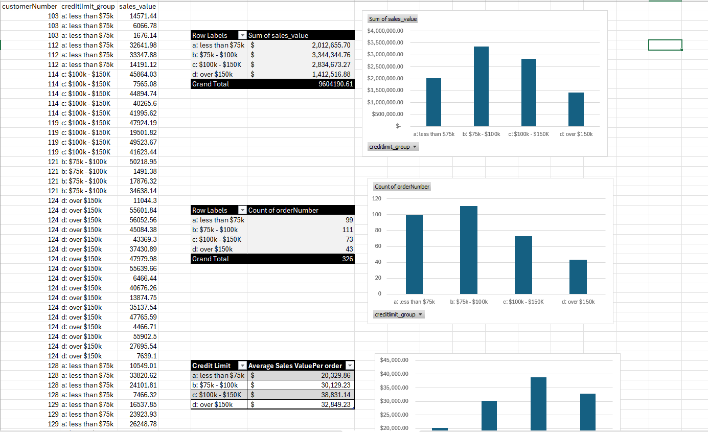
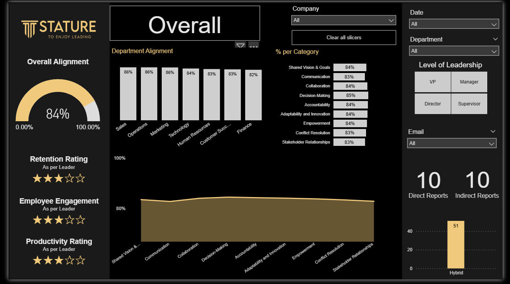

Sales & Financial Performance Analysis
Analyzed revenue, profitability, and customer credit exposure using SQL and Power BI to support business decision-making.
View ProjectBusiness Systems Analyst | CRM, Process Optimization, and Data-Driven Decision Support
Business Systems Analyst with experience translating business needs into structured requirements, workflows, and reporting solutions.
My work focuses on improving how systems support business operations—whether through CRM design, process optimization, or data-driven reporting.
I have worked across fintech and organizational environments to analyze workflows, identify inefficiencies, and design solutions that improve visibility and decision-making.
This includes building reporting dashboards, defining system requirements, and supporting the development of structured processes for lead management and performance tracking.
I bring a combination of analytical thinking, stakeholder communication, and system-level understanding, allowing me to bridge the gap between business needs and technical implementation.

Analyzed revenue, profitability, and customer credit exposure using SQL and Power BI to support business decision-making.
View Project
Built a Power BI reporting solution to transform qualitative survey data into structured insights for leadership decision-making.
View Project
Designed a CRM system to streamline lead management, advisor workflows, and policy tracking using structured requirements and process flows.
View ProjectSelected supporting analytics projects.